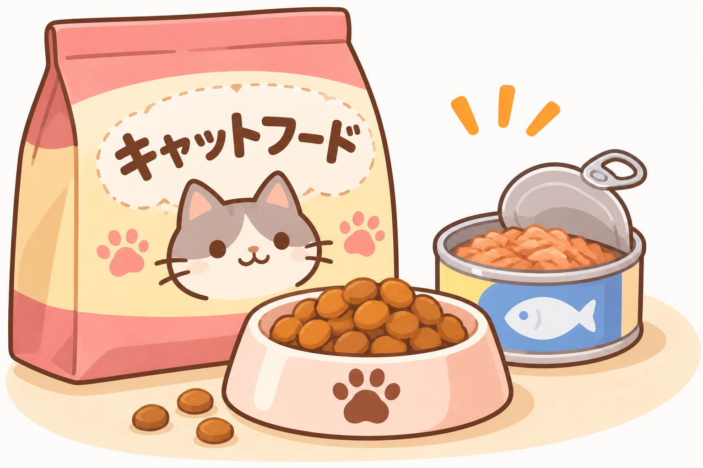
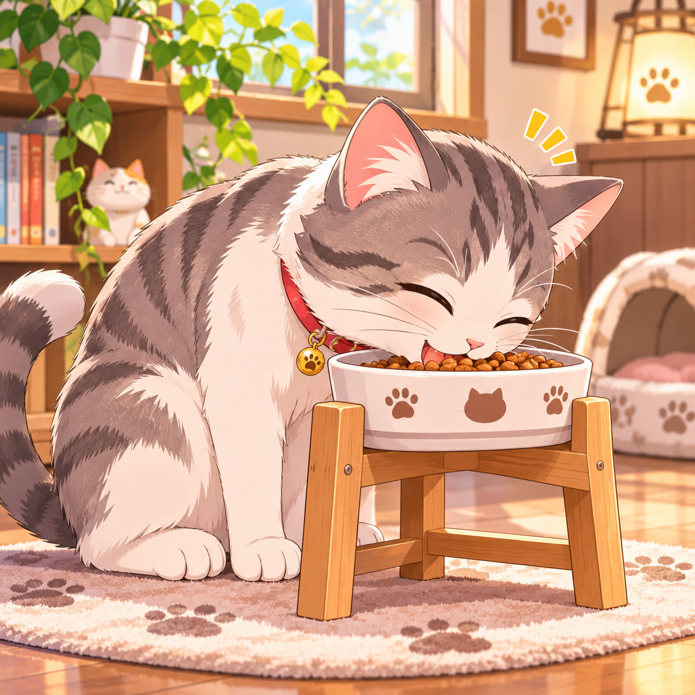
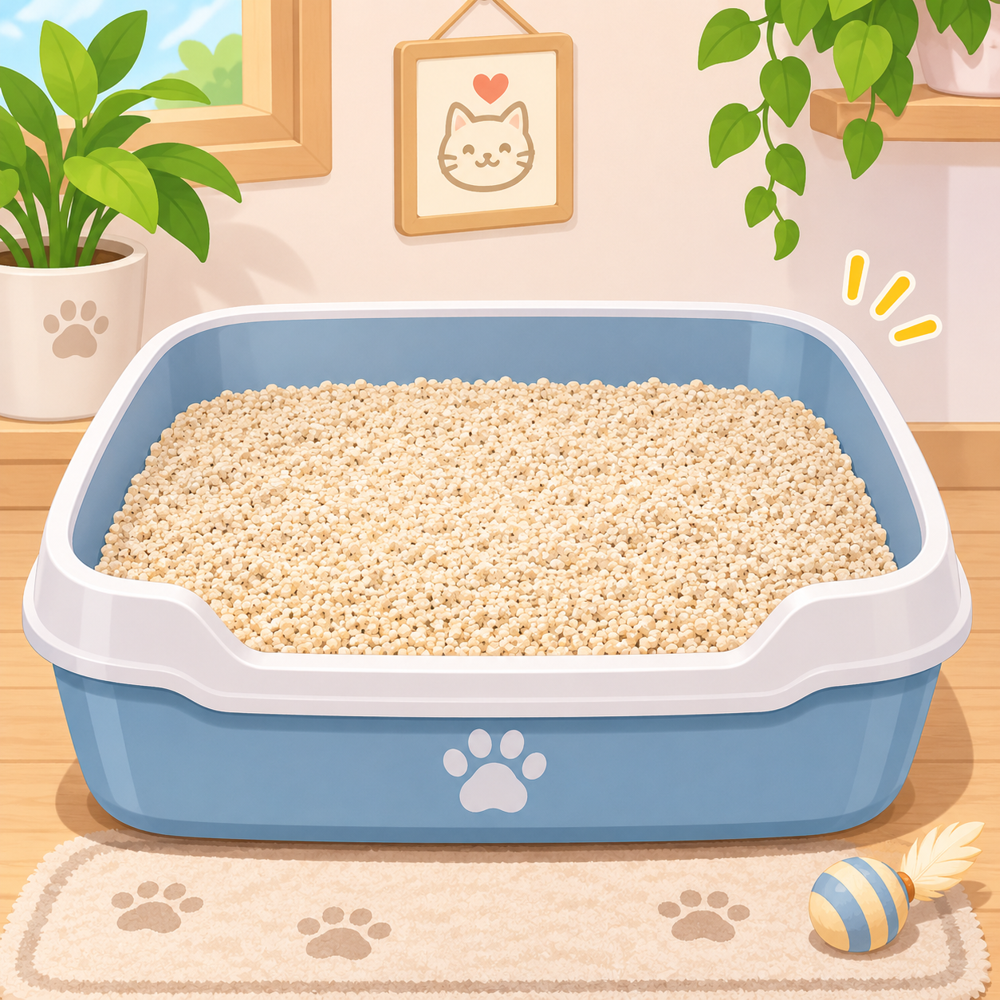
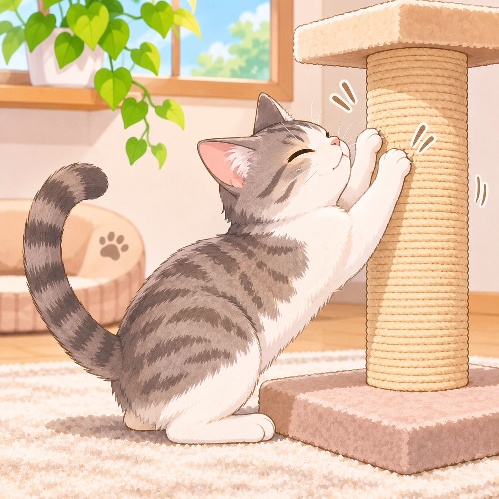
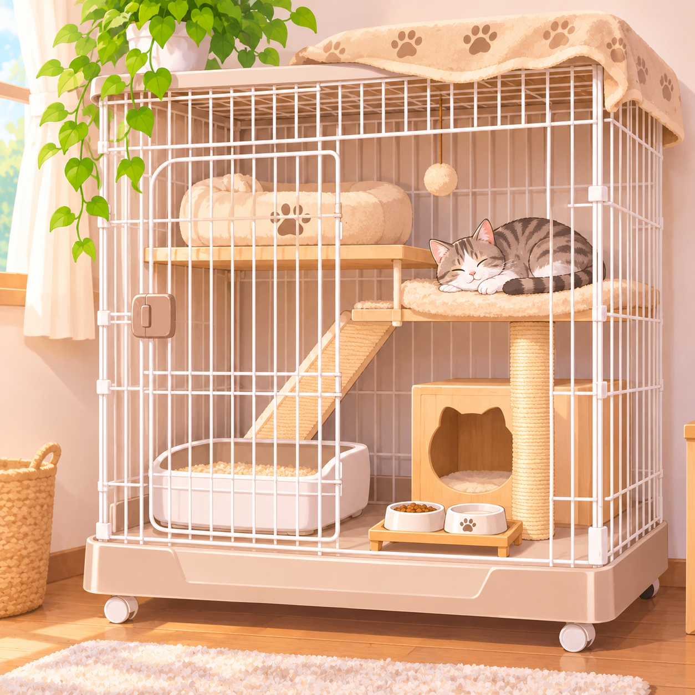

キャットフードは猫の月齢や年齢、体重に合った総合栄養食を選びましょう。ペットショップやブリーダー からお迎えした猫は、なるべく出迎える前から食べていたものと同じものを与えるようにしましょう。
食べ慣れているものを与えると、猫は安心して落ち着いて食べられます。1日の食事量を守り、与えすぎ ないようにしましょう。
キャットフードの保管は、湿気を防いで保存が可能な猫用のストレージボックスがあると便利です。さら に、自動給餌機（キャットフィーダー）があれば餌の補給がスムーズなので、余裕があれば用意しておくと良いでしょう。
キャットフードや水飲み用に食器を使います。フードと水飲み用の2つを準備しましょう。
プラスチック製や陶器など様々な材質の食器があるので、用途に合ったものを選びましょう。陶器製のものはひっくり返ると危ないので、滑り止めが付いていると安心です。
子猫の場合は小さい容器で構いませんが、成長した猫は首に負担がかかりやすいため、

猫は本能的に砂がある場所をトイレと認識するため、飼い始める際には猫砂を入れたトイレを設置しましょう。子猫の場合は、入りやすいように床との段差が少ないトイレがおすすめです。

猫は本能で爪とぎをする動物です。猫の爪とぎは爪のケアだけでなく、ストレス解消・気分転換やマーキングの意味をもつため重要なアイテムになります。
爪とぎが無いと壁や家具がボロボロになってしまうので、初めに準備しておきましょう。爪とぎの素材には、ダンボールやカーペット・畳などさまざまです。いろいろ試して猫が気に入る素材が良いでしょう。

キャリー・ケージは猫が病院やお出かけの際に必要な便利アイテムの一つです。さまざまな種類のキャリーがあり、猫の性格などにより選び方は異なります。
どのタイプも通気性が良いものを選び、キャリーの底にペットシートを敷くと安心です。購入の際は大きさや耐荷重を確認して猫に合うサイズを選びましょう。
